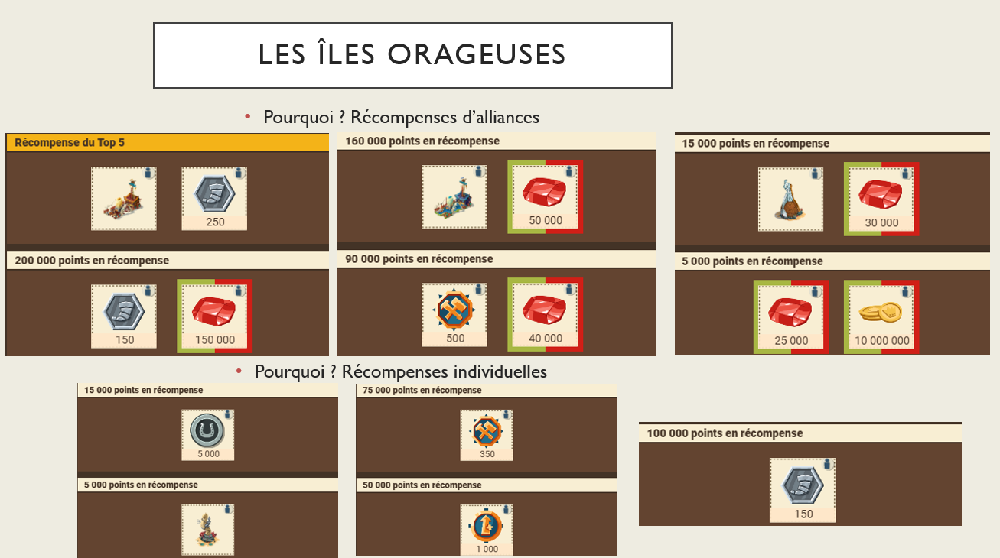
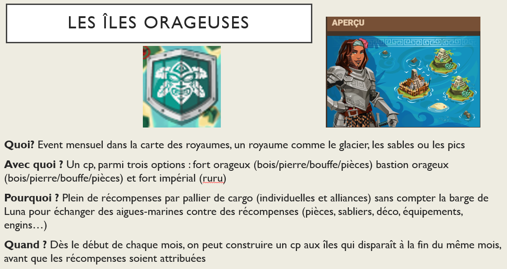
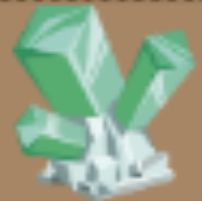
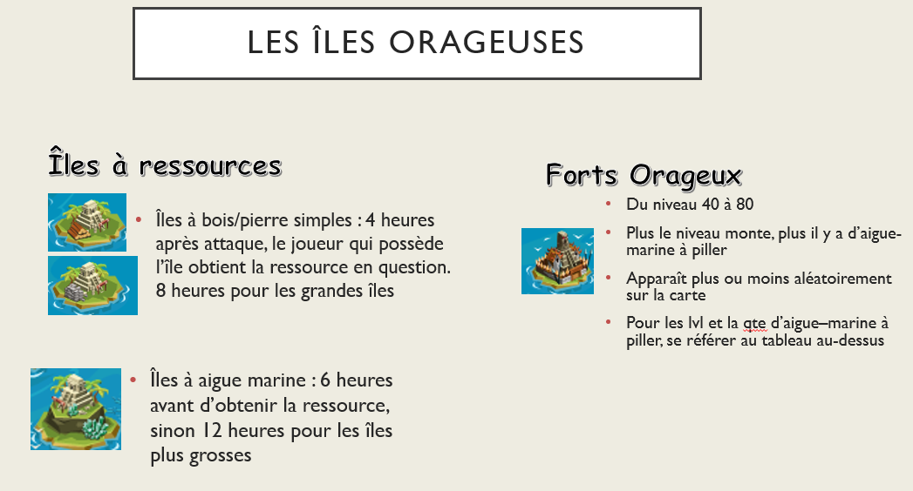
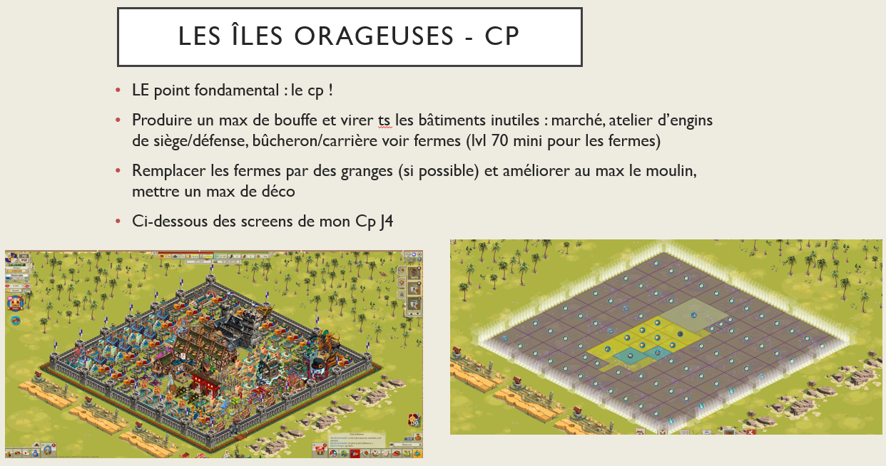
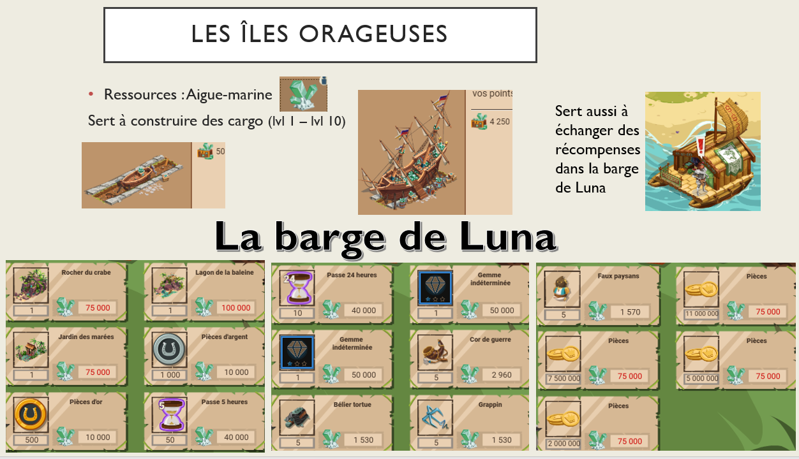
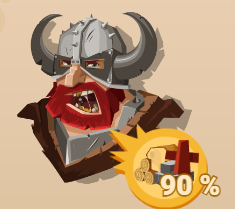

Les îles orageuses

Présentation de l'événement
- Quoi ? Événement mensuel dans la carte des royaumes, un royaume comme le glacier, les sables ou les pics.
- Avec quoi ? Un CP (Château Principal), parmi trois options : fort orageux (bois/pierre/bouffe/pièces), bastion orageux (bois/pierre/bouffe/pièces) et fort impérial (rubis).
- Pourquoi ? Plein de récompenses par palier de cargo (individuelles et alliances) sans compter la barge de Luna pour échanger des aigues-marines contre des récompenses (pièces, sabliers, décorations, équipements, engins…).

- Quand ? Dès le début de chaque mois. On peut construire un CP aux îles qui disparaît à la fin du même mois, avant que les récompenses soient attribuées.

Ressources : Aigue-marine

Forts

CP îles

Barge de Luna

Bonus
